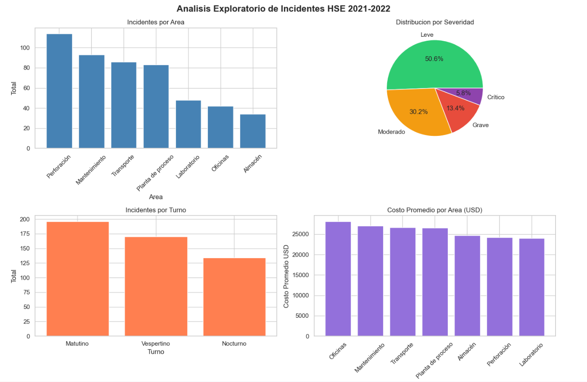
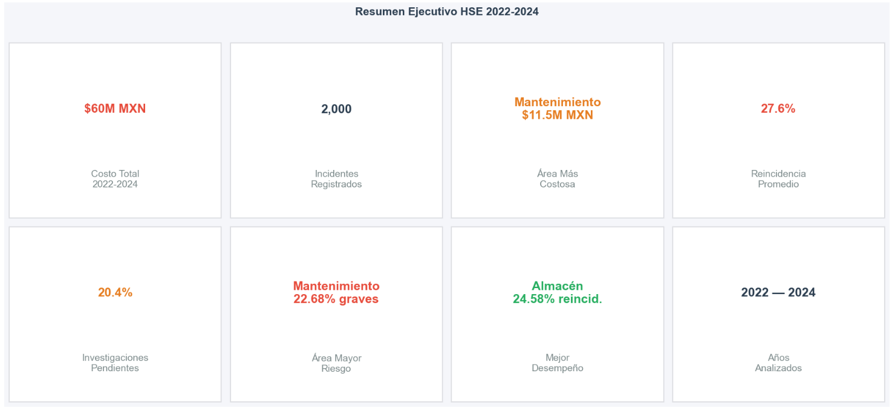
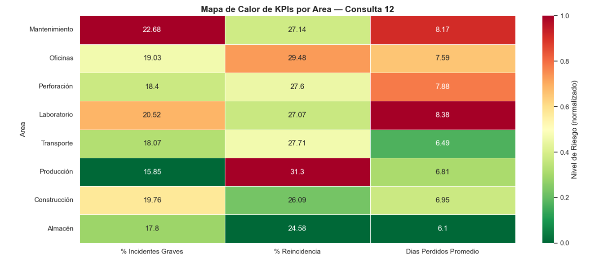
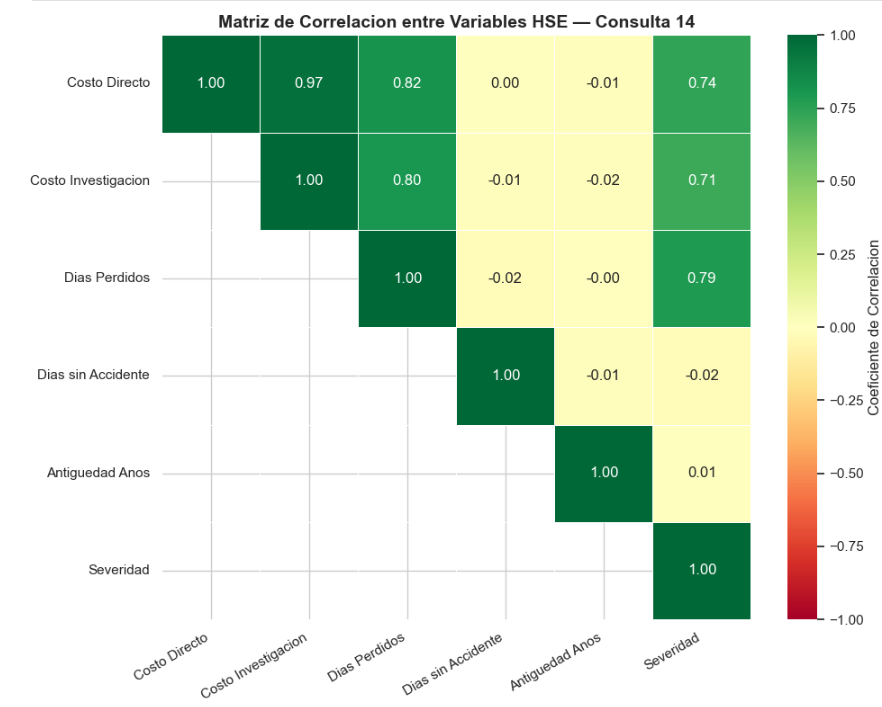

Transformo datos en inteligencia de negocio accionable. Con SQL, Python y visualización de datos, convierto preguntas de negocio en respuestas concretas para cualquier industria.
Soy Sergio Ulises Corona Sánchez, analista de datos en formación con más de 10 años de experiencia profesional en los sectores industrial, logístico y de operaciones de campo. Actualmente cursando el programa de Análisis de Datos en TripleTen (2025).
Los datos están en todas partes: en una línea de producción, en una ruta de transporte, en un registro de incidentes, en una factura. Mi experiencia en distintos sectores me enseñó a ver los problemas antes de verlos en una hoja de cálculo, y eso cambia la forma en que se analizan.
El análisis de datos no es solo técnica, es la capacidad de hacer las preguntas correctas. ¿Por qué sube el costo en ese turno? ¿Qué área está generando más retrabajos? ¿Cuál medida correctiva realmente funciona? Con SQL, Python y visualización de datos, convierto esas preguntas en respuestas concretas y accionables.
Me adapto a cualquier industria porque los patrones en los datos tienen lógica universal: costos, tiempos, frecuencias, tendencias. El dominio cambia, el método no. Busco oportunidades remotas como analista de datos junior donde pueda aportar tanto rigor técnico como visión de negocio desde el primer día.
Python · Pandas · Matplotlib · Seaborn
Contexto: Análisis exploratorio de 500 registros de incidentes de seguridad industrial simulados, con 13 variables que incluyen área, tipo, turno, severidad, costo y días perdidos.
Análisis: Se aplicó limpieza de datos, estadística descriptiva con Pandas y 4 visualizaciones con Matplotlib y Seaborn para identificar patrones de riesgo por área, turno y tipo de incidente.
Conclusiones: Perforación concentra el mayor número de incidentes. El turno matutino registra más eventos aunque el nocturno presenta mayor costo promedio. El 50.6% de los incidentes son leves, pero los graves representan el mayor impacto económico.

MySQL · Python · 2,000 registros · 3 años
Contexto: Base de datos de 2,000 incidentes HSE en 8 áreas operativas durante 2022–2024, con 4 tablas relacionadas: áreas, tipos de incidente, empleados e incidentes.
Análisis: 15 consultas SQL con JOINs, Window Functions (RANK, ROW_NUMBER, LAG), CTEs y CASE WHEN. Los resultados se exportaron a CSV y se visualizaron con Python, incluyendo análisis de reincidencia, EPP, turnos, medidas correctivas y correlación entre variables.
Conclusiones: Mantenimiento es el área más crítica en costo e incidentes graves. La reincidencia promedio es 27.6%, indicando fallas en el cierre de acciones correctivas. El turno nocturno tiene el mayor costo promedio por incidente. Cambio de procedimiento es la medida correctiva más efectiva con solo 21.43% de reincidencia.



Estoy buscando oportunidades remotas como analista de datos junior. Si tienes un proyecto o una vacante, me encantaría escucharte.